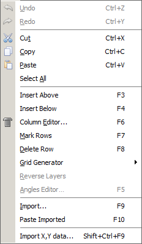
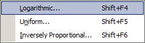

Edit Menu
Edit Menu
Navigation: OptiLayer Menu Commands >
Edit Menu
` <page_setup.html>`__ ` <idh_optilayer.html>`__ ` <copy_special.html>`__
The Edit menu provides access to a variety of data exchange and editing facilities. Most of these features are activated when you start editing a database file from the Database Access window.


General Editing
The most common options, such as:
Undo,
Redo,
Cut,
Copy,
Paste
are used for editing in the same way as elsewhere in Windows. They are also accessible from the OptiLayer Toolbar.
The Select All option allows you to select (mark) all rows of the current spreadsheet in one operation.

Note: OptiLayer supports a long Undo buffer, allowing a sequence of operations to be undone using the Undo function. The type of operation that can be undone is indicated by the modification of the Undo menu command, such as Undo Cell, Undo Paste, etc.
There is a specialized version of the Copy command called Copy Special. You can find it in the right-click menu of some windows with plots.
Additionally, there are special options designed for editing spreadsheets. They can be activated by selecting the corresponding menu item or by pressing one of the keyboard keys (shown below in parentheses).
Spreadsheet Editing
Insert Above (F3) inserts a copy of the marked row(s) above the selection.
Insert Below (F4) inserts a copy of the marked row(s) below the selection.
Column Editor… (F6) opens the Column Editor - a special tool used to fill spreadsheet columns with constant or uniformly increasing (decreasing) sets of values. You can also access the Column Editor from the OptiLayer Toolbar.
Mark Rows (F7) is used to select one or more rows for subsequent editing. Select the first row to be edited and press the F7 key, then select the last row to be edited and press the F7 key again. The two rows specifically selected and all rows between them will be highlighted. When a group of one or more rows is highlighted, edit commands will apply only to the highlighted rows. Pressing the F7 key while a row or group of rows is highlighted will undo the selection and cause all the marked rows to revert to their normal state.
Delete Row (F8) deletes the current row or a sequence of selected rows.
Grid Generator… (Shift+F4, Shift+F5, Shift+F6) is another editing option to fill columns with data. It may be used to fill a column with uniform or logarithmically increasing or decreasing data. It is also possible to generate inversely proportional set of values. For details, see Grid Generator.
Angles Editor… (F5) opens a dialog window (see Angles Editor) allowing the user to change the number of incidence angles and their values. When OptiLayer is in Angular Mode (the choice of Spectral or Angular mode is made in the Configuration Menu), this item is replaced by Wavelengths Editor… (F5), which opens the Wavelengths Editor. This menu item is available only if Target Editor is opened.
Reverse Layers: This command allows the user to reverse the order of layers in the design being edited.
Data Import options
Import… (F9) command allows the user to import data from text files. You can select text files, OptiLayer OUT files, or any other ASCII files in the Import Data dialog window.
Paste Imported… (F10) opens the Paste Buffer window used to transfer selected data to database files.
Import X, Y data… (Ctrl+Shift+F9) allows you to import two-column ASCII files to the Target database. After naming a new target database file, it opens the Import X, Y data options dialog, allowing you to modify some settings.